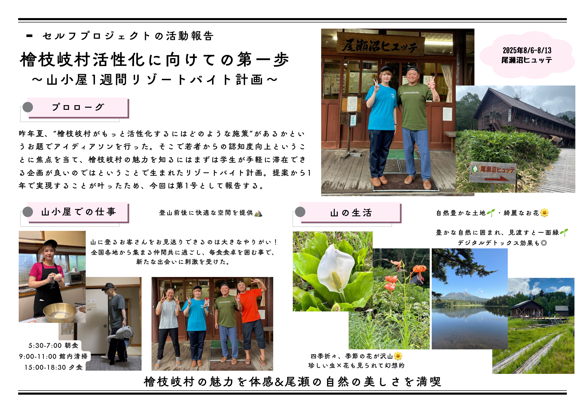

<!doctype html><html lang="ja" data-theme="light"><head><!doctype html><html lang="ja" data-theme="light"><head>

<meta charset="utf-8"><meta name="viewport" content="width=device-width, initial-scale=1"><meta charset="utf-8"><meta name="viewport" content="width=device-width, initial-scale=1">

<title>加藤 凜香 | ひらめきラボ</title><title>加藤 凜馁E| ひらめきラチE/title>

<link href="https://fonts.googleapis.com/css2?family=Inter:wght@400;600;800&display=swap" rel="stylesheet"><link href="https://fonts.googleapis.com/css2?family=Inter:wght@400;600;800&display=swap" rel="stylesheet">

<link rel="stylesheet" href="../../assets/css/style.css"></head><body><link rel="stylesheet" href="../../assets/css/style.css"></head><body>

<header class="header"><div class="container nav"><header class="header"><div class="container nav">

<a class="brand" href="../../index.html#members"><strong>ひらめきラボ</strong></a><a class="brand" href="../../index.html#members"><strong>ひらめきラチE/strong></a>

<nav class="nav-links"><a href="../../index.html#projects">Projects</a><a href="../../index.html#members">Members</a><a href="../../tools.html">便利ツール</a><a href="../../index.html#about">About</a><a href="../../index.html#contact" class="btn">Contact</a><nav class="nav-links"><a href="../../index.html#projects">Projects</a><a href="../../index.html#members">Members</a><a href="../../tools.html">便利ツール/a><a href="../../index.html#about">About</a><a href="../../index.html#contact" class="btn">Contact</a>

<div class="theme-switch"><label for="themeSelect">Theme</label><select id="themeSelect" class="theme-select"><option value="light">ライト</option><option value="dark">ダーク</option><option value="eco">エコ</option></select></div><div class="theme-switch"><label for="themeSelect">Theme</label><select id="themeSelect" class="theme-select"><option value="light">ライチE/option><option value="dark">ダーク</option><option value="eco">エコ</option></select></div>

</nav><button class="toggle" aria-label="メニュー">Menu</button></div></header></nav><button class="toggle" aria-label="メニュー">Menu</button></div></header>

<main><section><div class="container"><div class="detail"><div class="detail-grid"><main><section><div class="container"><div class="detail"><div class="detail-grid">

<div><h2>加藤 凜香</h2><p class="small">代表 / 機械専攻M1</p><p>プロフィール編集中。メールでご連絡ください。</p><div>

<div class="cta" style="margin-top:8px"><a class="btn-ghost" href="../../index.html#members">← Membersへ戻る</a><a class="btn-primary" href="mailto:example@tcu-hirameki.jp">example@tcu-hirameki.jp</a></div></div>	<h2>尾瀬・檜枝岐村 活性化�EロジェクチE/h2>

<div></div>	<p class="small">地域連携�E�E024年度、E/p>

</div></div></div></section></main>	<p>東京都市大学ひらめきラボが、尾瀬・檜枝岐村と連携し、学生�E“好き”を入口に村�E魁E��を発掘�E発信してぁE��す、Ebr>

<footer><div class="container"><div class="small">© 2025 Hirameki Lab</div></div></footer>	<b>主な活動！E/b></p>

<script src="../../assets/js/app.js" defer></script></body></html>	<ul>

		<li>四季の観察：緑�E夏、純白の冬。山小屋�E温泉�Eスノ�Eシューなど季節ごとの楽しみ、E/li>
		<li>食�E発掘：そばめE��菜、名物スイーチE��ど“地の味”、E/li>
		<li>次の一手：発車表示版デモで移動情報の見やすさを検証、E/li>
	</ul>
	<div class="cta" style="margin-top:8px">
		<a class="btn-ghost" href="../../index.html#projects">ↁEProjectsへ戻めE/a>
		<a class="btn-primary" href="../../assets/img/poster_oze_activation.png" download>ポスターをDL</a>
	</div>
</div>
<div>
	
</div>
</div></div></div></section></main>
<footer><div class="container"><div class="small">© 2025 Hirameki Lab</div></div></footer>
<script src="../../assets/js/app.js" defer></script></body></html>